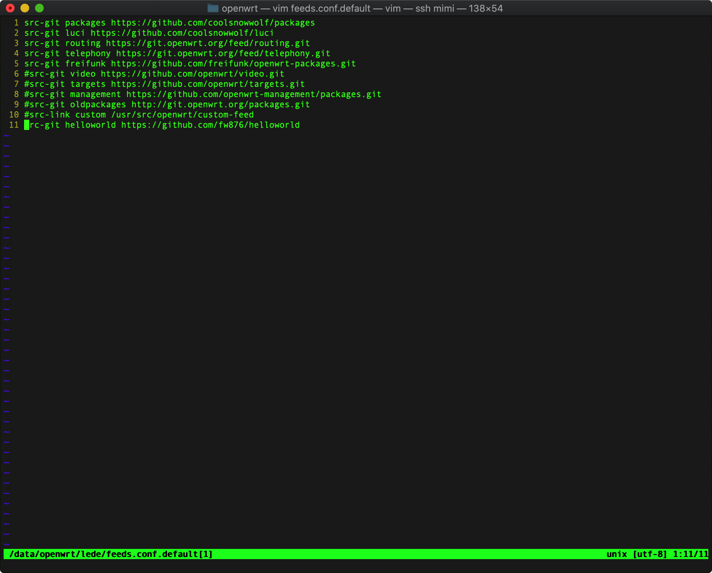
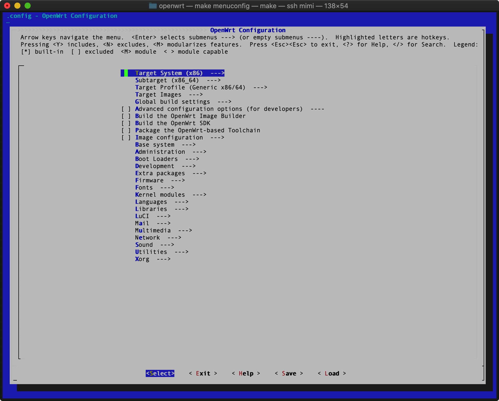
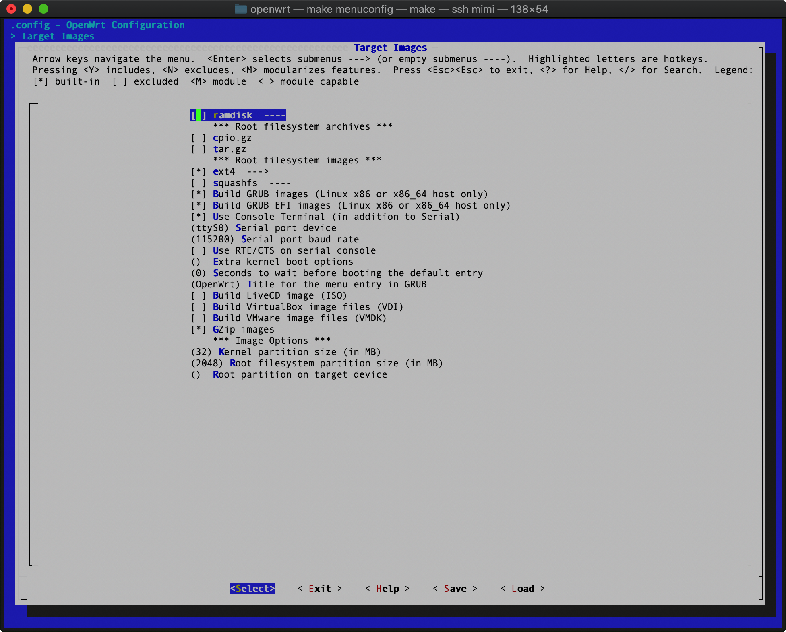
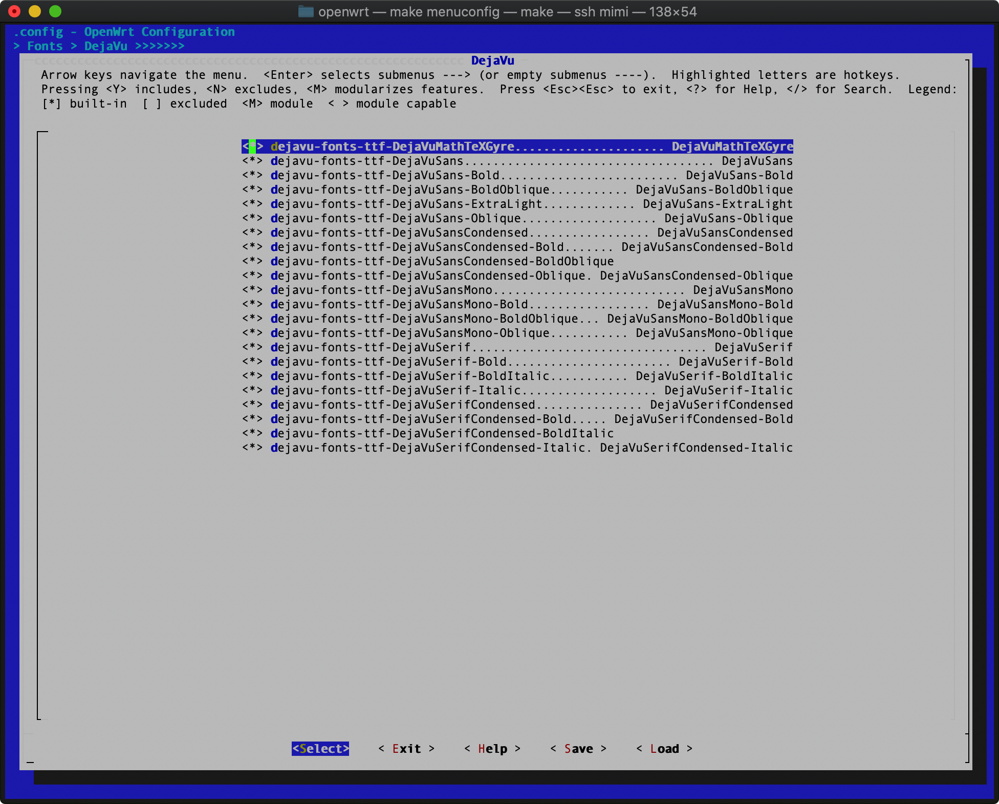
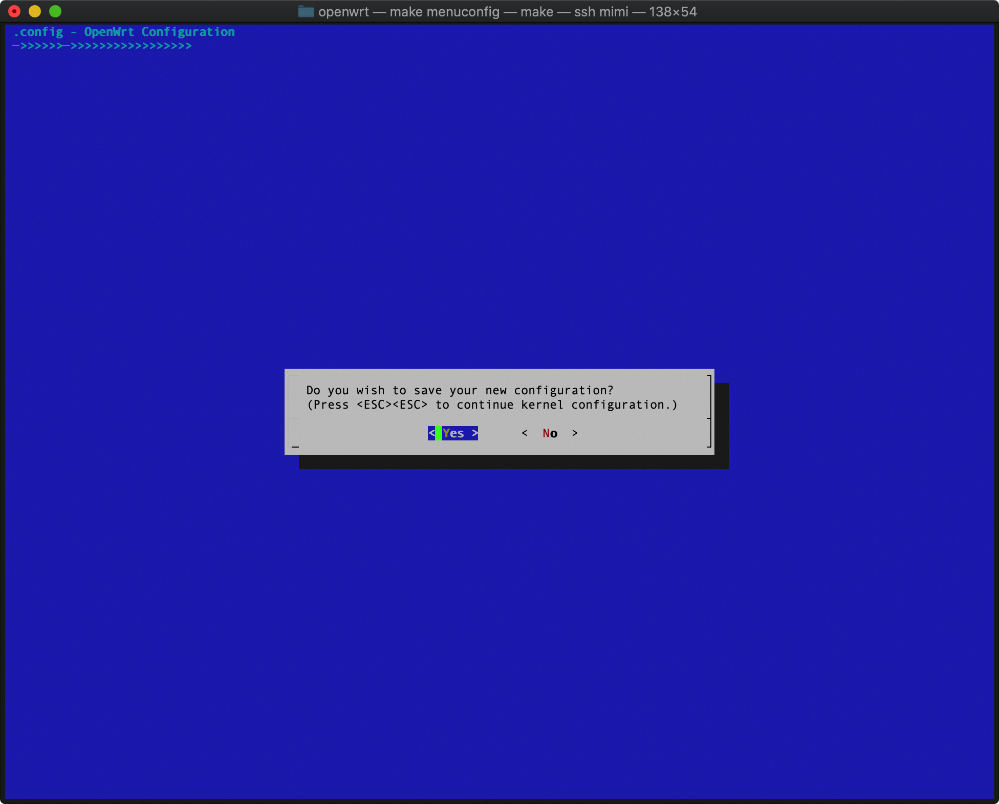
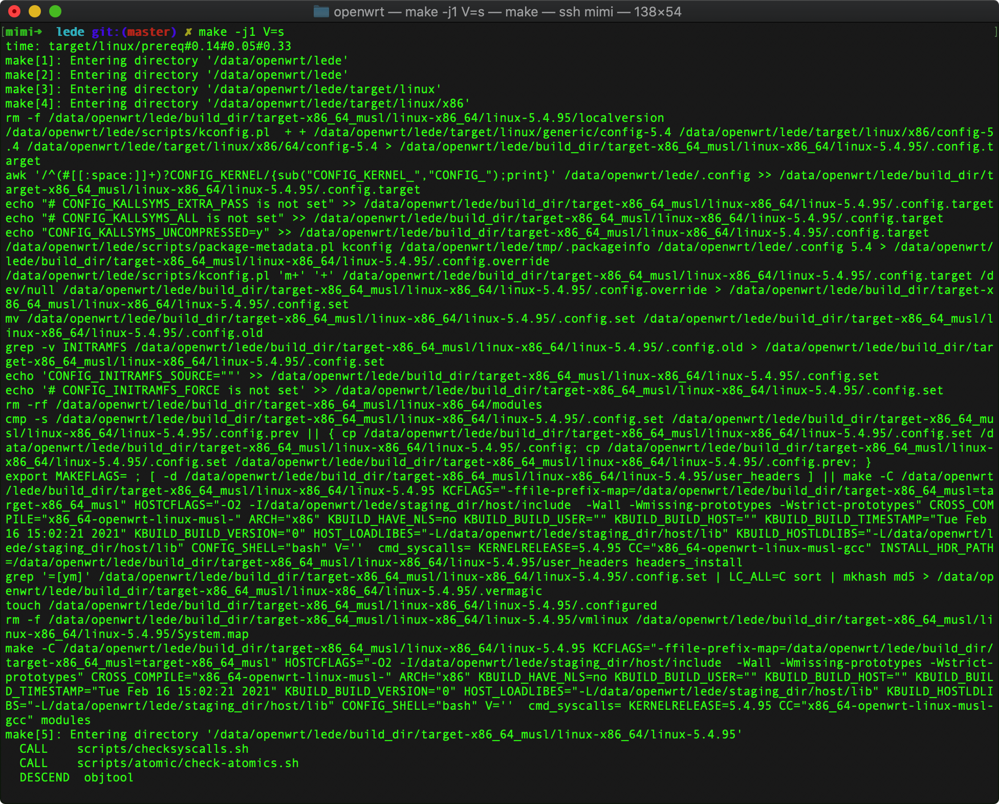
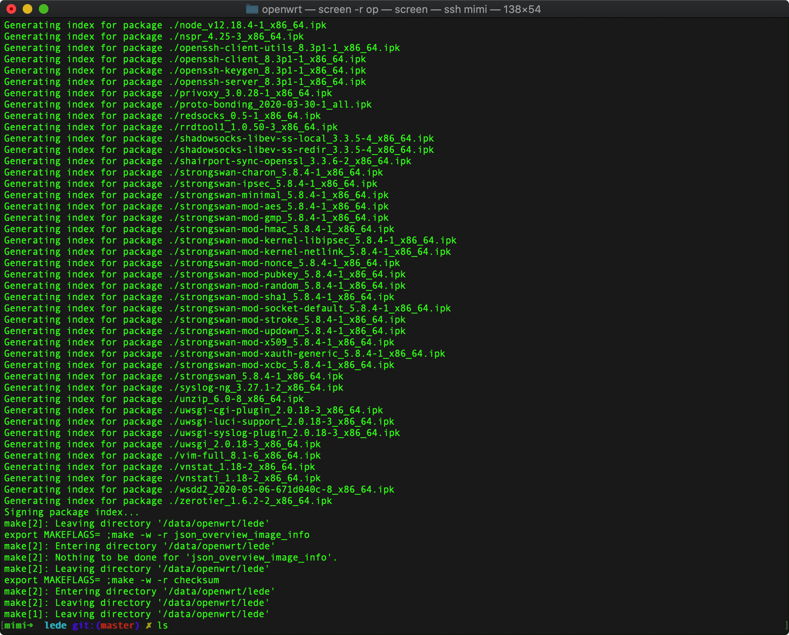
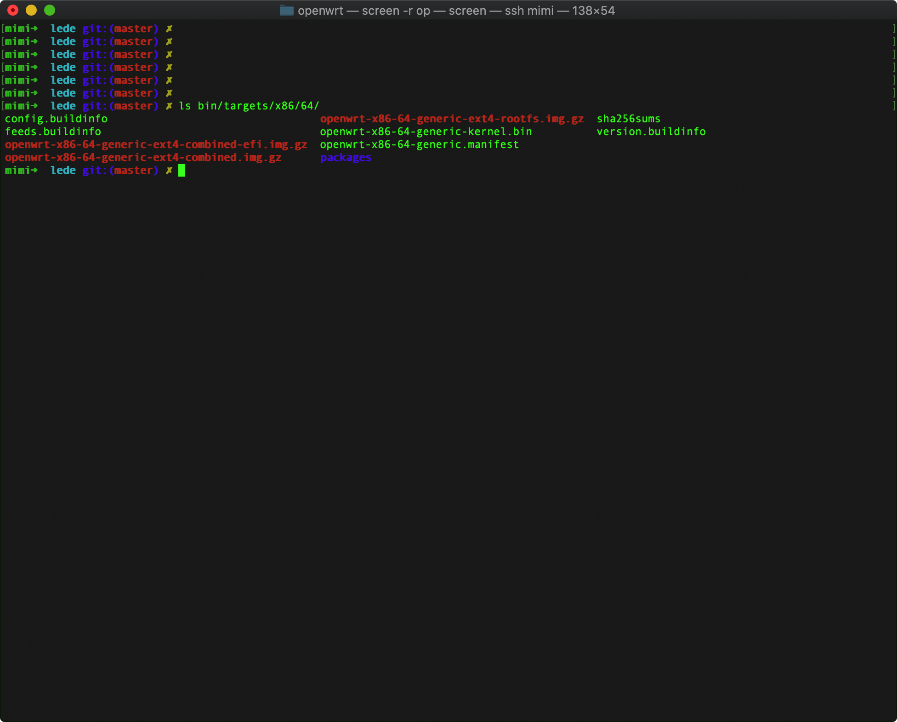

TreeviewCopyright © aleen42 all right reserved, powered by aleen42
自己编译OpenWRT初级教程
整个过程必须支持全局科学上网，所以如果你不能科学上网，那就不要搞了.这期的OpenWRT会分成两集来录，因为之前录了一个黑苹果，一次整到ACPI，有看客给提意见，说一步到位有难度，所以这次第一集适合小白，第二集进阶的。
固件源代码选择
- Lede大神 https://github.com/coolsnowwolf/lede
- Lienol大神 https://github.com/Lienol/openwrt 黛码只是在早期的时候玩了一下Lienol的固件，现在也记不清楚了，目前在用的是LEDE大神的，所以这期就会以LEDE大神的固件为样本介绍。在此对两位大神表示诚挚的感谢:)。
编译前准备
- 可自行查看文档，在LEDE的Github上写的很清楚
- 首先装好 Ubuntu 64bit，推荐 Ubuntu 18 LTS x64 (LEDE大神推荐)
- 首先输入
sudo apt-get update - 然后再输入
sudo apt-get -y install build-essential asciidoc binutils bzip2 gawk gettext git libncurses5-dev libz-dev patch python3 python2.7 unzip zlib1g-dev lib32gcc1 libc6-dev-i386 subversion flex uglifyjs git-core gcc-multilib p7zip p7zip-full msmtp libssl-dev texinfo libglib2.0-dev xmlto qemu-utils upx libelf-dev autoconf automake libtool autopoint device-tree-compiler g++-multilib antlr3 gperf wget curl swig rsync - checkout 源代码
git clone https://github.com/coolsnowwolf/lede - 呵呵
有个小骚操作
vim feeds.conf.default
建议删掉最后一行最前面的#号，别问我为什么。。。。
src-git helloworld https://github.com/fw876/helloworld

- 更新插件
./scripts/feeds update -a ./scripts/feeds install -a
关键的步骤
先输入命令：
make menuconfig

因为说的好这期是初级的，所以只会讲前面几个必备的
- Target System (X86) ->
- 请选择X86
- Subtarget (X86_64) ->
- 选择 X86_64
- Target Profile (Generic x86/64) -->
- 选择 Generic x86/64
- Target Images --> 
- Global Build Settings ---> 不要改
- Advanced configurations options (for developers) --- 不要改
- Build the OpenWrt Image Builder 不要改
- Build the OpenWrt SDK 不要改
- Package the OpenWrt-based Toolchain 不要改
- Image configuration ---> 不要改
- Base system ---> 听视频，基本不需要改的
- Administraction ---> 不动也行，具体的看视频吧，我会简单的讲一下
- Boot Loaders --->不用改
- Development ---> 不用改
- Extra Packages ---> 不用改
- Firmware ---> 初级别改，高级我再说怎么改吧
- Fonts --->
- DejaVu ---> 我都全部选好，美观的部分一个不落 
- Kernel Modules ---> 先别管，高级的再讲
- Languages --> 别改
- Libraries --> 高级的时候再说吧
- LuCi ---> 这个改下面两项目里的东西，其他的别改吧
- Applications ---> 看视频
- Themes ---> 全选吧，美观最重要
- Mail ---> 别动
- Multimedia ---> 别动
- Network --> 别动
- Sound ---> 别动
- Utilities ---> 别动
- Xorg ---> 别动
好了 ESC 选 Exit 保存吧 
编译
- 输入
等着吧make -j1 V=s

..... 这个应该需要很久很久 ......
- 编译完成 
- 进入目录 bin/targets/x86/64/  我的主板是支持efi启动的，所以用带efi的文件 openwrt-x86-64-generic-ext4-combined-efi.img.gz 解压后得到一个img文件，烧到U盘里
制作U盘
- mac用户使用 balenaEtcher
- 烧完直接插x86路由器里启动就好了